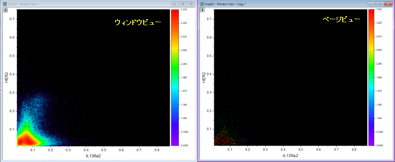

FAQ-1021 点の密度をカラーマップで表現した散布図を作成する方法は？
RichText-for-Wksheader
最終更新日：2020/01/17
XYデータがあり、局所密度で色付けされたドットを使用して散布図を作成したい場合は、XY列を選択してメニューの作図：基本の2Dグラフ：密度ドットをクリックします。
必要なOriginのバージョン: Origin 2020 以降
ページビューモードでのグラフ表示の問題
プロットされたグラフは、デフォルトでウィンドウビューモードで表示されます。プロットの描画速度向上のために、シンボルサイズは自動的に0に設定されます。作図の詳細ダイアログでビューモードをページビューにすると、下図のように全く異なる表示になります。この問題を解決し、ページビューモードで正しく表示させるには、シンボルサイズを1にします。

 |
密度ドットグラフがイメージファイルにエクスポートされるか、Wordなどにコピー/貼り付けされると、表示の一貫性を保つためにシンボルサイズが再調整されます。グラフが正しく生成されるための条件は次のとおりです。
- グラフページがウィンドウビューモードに設定されている。
- グラフのレイヤ数が1つのみである。複数のレイヤがある場合、他のレイヤははじめのレイヤと同じ領域を共有する必要があります。
- グラフ内に少なくとも1つのドットプロットがある。ここでのドットプロットは、（a）シンボルが四角で塗りつぶされており、(B) シンボルサイズがゼロ のものです。
|
キーワード: 密度, ヒートマップ, ページビュー, ウィンドウビュー, カラーマップ